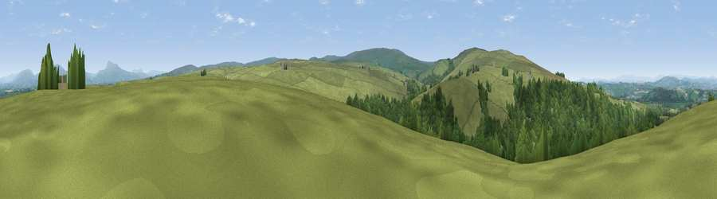

Viewpoint near Wray
#13942 in England · top 42% of its area beats it · near Wray · access?Where it is
The exact computed spot (SD 61275 65475). Click the marker for map links.
Public access: no public right of way or access land is recorded at this exact spot — it may be on private land. Computed from Natural England's CRoW access layer and OpenStreetMap rights of way — not the legal definitive map. Always verify locally.
The view, rendered

A 360° render of this exact spot computed from the terrain model, tree cover and land cover — summer colours, afternoon light, calibrated against photographs of famous viewpoints. Real trees, hedges and buildings will differ in detail.
The panorama
Grey silhouette: terrain skyline in each direction (720 bearings, Earth curvature and refraction included). Dashed green: skyline with trees (+15 m) and buildings (+8 m) as obstacles. Blue strip: how far the ground is visible on each bearing.
Where the view opens
Wedge length = distance to the farthest visible ground on that bearing (vegetation-aware). Rings at 10, 25 and 50 km.
What fills the view
67% grassland · 32% woodland ·
Angular shares of the visible panorama (visual magnitude), not map area. Landscape diversity 0.29 (0–1 Shannon).
Key numbers
More beautiful places nearby
The staircase of upgrades: each row has a higher view potential than everything closer. Driving times are estimates from straight-line distance, calibrated against real road routing — check an actual route before setting out.
| Place | Direction | Drive | Score |
|---|---|---|---|
| Viewpoint near Wray | WNW · 1 km | ~3 min | 64.6 |
| Viewpoint near Wray | W · 2 km | ~6 min | 72.0 |
| Viewpoint near Wray | WSW · 3 km | ~6 min | 73.8 |
| Viewpoint c9201_7202 | SSW · 5 km | ~12 min | 76.1 |
| Viewpoint c9170_7172 | SSW · 7 km | ~15 min | 77.0 |
| Grit Fell | SW · 9 km | ~17 min | 77.3 |
| Viewpoint near Quernmore | SW · 9 km | ~18 min | 77.7 |
| Viewpoint near Quernmore | SW · 9 km | ~18 min | 78.0 |
54.08372, -2.59344 · source: screening · position refined by local search. Computed location — check access rights before visiting.